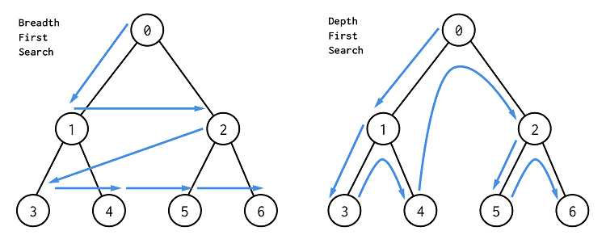
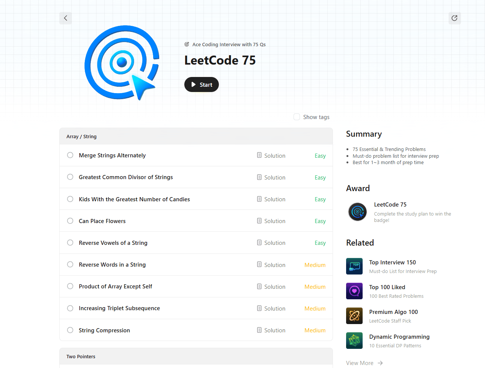

Python Algorithms
Алгоритмическая база для Python: FLOPS, сложность, память и основные подходы к задачам.
-
FLOPS: терминология
FLOP (floating-point operation) — одна операция над числами с плавающей точкой: сложение, умножение, деление, иногда fused multiply-add считают как две операции.
FLOPS (floating-point operations per second) — скорость выполнения таких операций в секунду. Например, $10^9$ FLOPS = $1$ GFLOPS.
- FLOP — количество операций: «модель требует $2\cdot10^9$ FLOP на один forward pass».
- FLOPS — производительность железа или фактический throughput: «ускоритель выдает $40$ TFLOPS».
- MAC (multiply-accumulate) — операция вида $a\cdot b + c$; в ML часто считают $1$ MAC как $2$ FLOP.
FLOP/FLOPS полезны, когда нужно оценить вычислительную стоимость линейной алгебры, нейросетей и численных методов. Например, умножение матриц размера $n\times n$ классическим способом требует порядка $2n^3$ FLOP: для каждого элемента результата считаем $n$ умножений и примерно $n$ сложений.
FLOPS не равны реальному времени работы программы. На практике влияют доступ к памяти, кэш, векторизация, Python-overhead, параллелизм, тип данных (
float32,float64,int8) и эффективность конкретной реализации. Поэтому FLOPS — хорошая грубая оценка вычислений, но не полная модель производительности.def dot(x, y): total = 0.0 for a, b in zip(x, y): total += a * b return totalДля векторов длины $n$ в коде выше выполняется $n$ умножений и $n$ сложений, то есть примерно $2n$ FLOP. Но в чистом Python реальное время часто будет ограничено интерпретатором, а не скоростью арифметики процессора.
Чем FLOP отличается от FLOPS?
FLOP — количество операций с плавающей точкой. FLOPS — скорость выполнения таких операций в секунду.
Что такое MAC и как его часто переводят в FLOP?
MAC — операция multiply-accumulate: умножить и прибавить. В ML её часто считают как $2$ FLOP.
Почему высокий FLOPS не гарантирует быстрый Python-код?
Потому что время может упираться в интерпретатор, память, кэш, передачу данных и неэффективную реализацию, а не только в арифметические операции.
-
Временная сложность оценивает, как растет число шагов алгоритма при увеличении размера входа $n$.
Сложность по памяти оценивает, сколько дополнительной памяти нужно алгоритму при росте $n$: массивы, хеш-таблицы, очереди, стек рекурсии, копии данных.
Подробная нотация $\mathcal{O}(\cdot)$ уже разобрана на странице Python Advanced: алгоритмическая сложность. Здесь важно применять её сразу в двух измерениях: время и память. Например, алгоритм может работать за $\mathcal{O}(n)$ времени и требовать $\mathcal{O}(1)$ дополнительной памяти, а может работать за $\mathcal{O}(n)$ времени и хранить $\mathcal{O}(n)$ промежуточных данных.
Код ниже проходит вход один раз и не создает дополнительных коллекций.
def total(values): result = 0 for x in values: result += x return resultВремя: $\mathcal{O}(n)$, потому что проходим все элементы. Дополнительная память: $\mathcal{O}(1)$, потому что храним только
resultи текущий элемент.Здесь память покупает быстрый поиск: уже встреченные элементы складываются в
set.def has_duplicate(values): seen = set() for x in values: if x in seen: return True seen.add(x) return FalseСреднее время: $\mathcal{O}(n)$, потому что операции с
setв среднем константные. Дополнительная память: $\mathcal{O}(n)$, потому что в худшем случае храним все элементы.- Оценивать только время и забывать, что
set,dict, копии списков и срезы требуют памяти. - Считать рекурсивный алгоритм $\mathcal{O}(1)$ по памяти, хотя стек вызовов может быть $\mathcal{O}(h)$, где $h$ — глубина рекурсии.
- Путать размер входа: для графа сложность часто выражают через $V$ вершин и $E$ ребер, например $\mathcal{O}(V + E)$.
Что оценивает временная сложность?
Как растет количество шагов алгоритма при увеличении размера входа.
Что входит в сложность по памяти?
Дополнительные структуры данных, копии, очереди, хеш-таблицы и стек рекурсии, которые нужны алгоритму помимо входных данных.
Почему
setможет ускорить алгоритм, но увеличить память?Поиск в
setв среднем $\mathcal{O}(1)$, но для этого нужно хранить элементы в хеш-таблице, что дает $\mathcal{O}(n)$ дополнительной памяти.Где подробнее разобрана нотация $\mathcal{O}(\cdot)$?
На странице Python Advanced: алгоритмическая сложность.
- Оценивать только время и забывать, что
-
Алгоритмический подход — типовой способ разложить задачу на шаги. На собеседованиях чаще проверяют не знание редкого алгоритма, а умение выбрать подход: пройти массив одним указателем, использовать хеш-таблицу, отсортировать, применить два указателя, BFS/DFS или динамическое программирование.
Подход Когда использовать Типичная сложность Один проход Подсчеты, максимум/минимум, проверка условия $\mathcal{O}(n)$ Хеш-таблица ( dict,set)Быстрый поиск, частоты, дедупликация $\mathcal{O}(n)$ время, $\mathcal{O}(n)$ память Сортировка Нужно упорядочить, сгруппировать, упростить сравнения $\mathcal{O}(n\log n)$ Два указателя Отсортированный массив, подотрезки, пары $\mathcal{O}(n)$ после сортировки или без неё Скользящее окно Непрерывные подмассивы/подстроки $\mathcal{O}(n)$ Стек/очередь Скобки, монотонность, BFS $\mathcal{O}(n)$ DFS/BFS Графы, деревья, компоненты связности $\mathcal{O}(V + E)$ Динамическое программирование Оптимум по подзадачам, количество способов Зависит от числа состояний - Сначала уточни размер входа и требуемые ограничения: $n=10^3$ и $n=10^6$ ведут к разным решениям.
- Выпиши наивное решение и его сложность.
- Найди, что повторяется: поиск, пересчет, сравнение всех со всеми, обход графа, выбор оптимума.
- Подбери структуру данных или паттерн, который убирает лишнюю работу.
Наивное решение проверяет все пары и работает за $\mathcal{O}(n^2)$. Если хранить уже увиденные числа в
dict, то для каждогоxможно за $\mathcal{O}(1)$ проверить, встречалось лиtarget - x.def two_sum(nums, target): seen = {} for i, x in enumerate(nums): need = target - x if need in seen: return seen[need], i seen[x] = i return NoneРазборы алгоритмических задач с собеседований собраны на странице interviews/algo-tasks.html. Эту страницу удобно использовать после теории: сначала классифицировать задачу по подходу, затем смотреть решение.
Links
- NeetCode — структурированная карта паттернов и задач LeetCode.
- NeetCode YouTube — видеоразборы задач с LeetCode.
Какие подходы стоит узнавать первыми?
Один проход, хеш-таблица, сортировка, два указателя, скользящее окно, стек/очередь, DFS/BFS и динамическое программирование.
Почему хеш-таблица часто улучшает решение?
Она заменяет линейный поиск на средний $\mathcal{O}(1)$ lookup, но обычно требует $\mathcal{O}(n)$ дополнительной памяти.
Когда стоит думать про DFS или BFS?
Когда задача описывает граф, дерево, зависимости, достижимость, компоненты связности или поиск кратчайшего пути в невзвешенном графе.
Где смотреть практические разборы задач?
На странице interviews/algo-tasks.html.
-
Один проход
Один проход — подход, при котором алгоритм читает вход слева направо один раз и поддерживает небольшое состояние: счетчик, сумму, максимум, минимум, флаг, текущий ответ или несколько агрегатов.
- Нужно посчитать количество элементов с условием.
- Нужно найти максимум, минимум, сумму, среднее, первый подходящий элемент.
- Нужно проверить, выполняется ли условие для всех или хотя бы одного элемента.
- Ответ можно обновлять локально, без возврата к прошлым элементам.
Код хранит только текущий лучший индекс и значение.
def max_with_index(values): if not values: return None best_i = 0 best_value = values[0] for i, value in enumerate(values[1:], start=1): if value > best_value: best_i = i best_value = value return best_i, best_valueВремя: $\mathcal{O}(n)$, память: $\mathcal{O}(1)$.
Главный вопрос: «какую минимальную информацию из пройденной части нужно сохранить, чтобы обработать следующий элемент?» Если ответ — несколько переменных, скорее всего подходит один проход. Например, для максимума достаточно текущего лучшего значения; для проверки возрастающей последовательности достаточно предыдущего элемента.
Код сравнивает каждый элемент с предыдущим и останавливается при первом нарушении.
def is_non_decreasing(values): for prev, current in zip(values, values[1:]): if current < prev: return False return TrueВремя: $\mathcal{O}(n)$, память: $\mathcal{O}(1)$, но срез
values[1:]создает копию для списка. Для больших входов лучше идти по индексам или через итератор.- Срезы вроде
values[1:]могут добавлять $\mathcal{O}(n)$ памяти. - Если для каждого элемента внутри прохода запускается поиск по списку, реальная сложность может стать $\mathcal{O}(n^2)$.
- Один проход не подходит, если решение требует видеть будущие элементы без дополнительной структуры данных.
Что такое подход «один проход»?
Это обработка входа за один линейный проход с поддержанием небольшого состояния.
Какая типичная сложность у одного прохода?
Время $\mathcal{O}(n)$, дополнительная память обычно $\mathcal{O}(1)$.
Как понять, что подход подходит?
Если для ответа достаточно обновлять несколько переменных при чтении очередного элемента.
Какая частая ошибка ломает оценку памяти?
Использовать срезы или копии данных там, где можно обойтись индексами или итератором.
-
Хеш-таблица: dict и set
Хеш-таблица — структура данных для быстрого поиска по ключу. В Python основные реализации —
dictдля пар ключ-значение иsetдля множества уникальных ключей.- Нужно быстро проверять, встречался ли элемент раньше.
- Нужно считать частоты элементов.
- Нужно убрать дубликаты.
- Нужно заменить вложенный цикл «найти пару/дополнение» на lookup.
- Нужно сгруппировать элементы по ключу.
dictсвязывает элемент с количеством его появлений.def frequencies(values): counts = {} for x in values: counts[x] = counts.get(x, 0) + 1 return countsСреднее время: $\mathcal{O}(n)$, память: $\mathcal{O}(k)$, где $k$ — число разных элементов. В худшем случае $k=n$.
set(a)заменяет линейный поиск поaна быстрый lookup.def intersection(a, b): seen = set(a) result = [] for x in b: if x in seen: result.append(x) return resultВремя: $\mathcal{O}(n + m)$, память: $\mathcal{O}(n)$ для
set(a).Если наивное решение содержит проверку
x in listвнутри цикла, спроси: можно ли заранее положить элементы вsetилиdict? Часто это меняет $\mathcal{O}(n^2)$ на $\mathcal{O}(n)$ ценой дополнительной памяти.- Ключи должны быть хешируемыми:
int,str,tupleиз хешируемых элементов подходят,listиdict— нет. dictиsetдают среднее $\mathcal{O}(1)$, но не гарантируют сортированный порядок по значению.- Ускорение поиска почти всегда покупается памятью.
Когда использовать
set?Когда нужно быстро проверять наличие элемента или убрать дубликаты.
Когда использовать
dict?Когда нужно связать ключ со значением: частотой, индексом, группой или агрегатом.
Какая типичная сложность поиска в
dict/set?В среднем $\mathcal{O}(1)$ на lookup, вставку и удаление.
Какой главный trade-off у хеш-таблиц?
Быстрый поиск за счет дополнительной памяти.
-
Сортировка как алгоритмический подход
Сортировка как подход — прием, при котором мы сначала упорядочиваем данные, чтобы дальше задача стала проще: одинаковые элементы оказываются рядом, пары можно искать двумя указателями, интервалы можно обрабатывать по началу или концу.
- Нужно сгруппировать одинаковые или близкие элементы.
- Нужно найти пары/тройки с условием по сумме.
- Нужно обработать интервалы, события, дедлайны.
- Порядок исходного массива не важен или его можно восстановить через индексы.
После сортировки одинаковые элементы оказываются рядом.
def has_duplicate(values): values = sorted(values) for i in range(1, len(values)): if values[i] == values[i - 1]: return True return FalseВремя: $\mathcal{O}(n\log n)$ из-за сортировки, память зависит от реализации и копии
sorted(values).Сортировка по началу интервала позволяет обрабатывать пересечения одним проходом.
def merge_intervals(intervals: list[list[int]]) -> list[list[int]]: if not intervals: return [] intervals = sorted(intervals) merged = [list(intervals[0])] for start, end in intervals[1:]: last = merged[-1] if start <= last[1]: last[1] = max(last[1], end) else: merged.append([start, end]) return mergedВремя: $\mathcal{O}(n\log n)$ из-за сортировки, затем $\mathcal{O}(n)$ на проход. Дополнительная память: $\mathcal{O}(n)$ для результата.
Сортировка полезна, когда беспорядок во входе мешает видеть структуру. После сортировки локальные отношения становятся информативными: дубликаты рядом, минимальные и максимальные элементы на краях, интервалы идут в естественном порядке.
- Сортировка обычно стоит $\mathcal{O}(n\log n)$, поэтому не стоит применять её, если существует простой $\mathcal{O}(n)$ проход.
sorted()возвращает новый список;list.sort()сортирует на месте.- Если нужно сохранить исходные позиции, сортируй пары
(value, index).
Зачем сортировать данные перед решением?
Чтобы одинаковые или сравнимые элементы оказались рядом, а дальнейший проход стал проще.
Какая типичная сложность сортировки сравнениями?
$\mathcal{O}(n\log n)$ по времени.
Чем
sorted()отличается отlist.sort()?sorted()создает новый список,list.sort()меняет список на месте.Что делать, если после сортировки нужны исходные индексы?
Сортировать пары
(value, index)или объекты с сохраненным исходным индексом.
-
Два указателя
Два указателя — подход, где мы поддерживаем две позиции в массиве или строке и двигаем их по правилу. Указатели могут идти с разных концов к центру или вместе слева направо.
- Массив отсортирован, и нужно найти пару с заданной суммой.
- Нужно сравнивать элементы с двух концов.
- Нужно удалить/переставить элементы на месте.
- Нужно сжать последовательность или объединить два отсортированных массива.
Указатели стартуют с разных концов и двигаются в зависимости от текущей суммы.
def two_sum_sorted(nums, target): left = 0 right = len(nums) - 1 while left < right: current = nums[left] + nums[right] if current == target: return left, right if current < target: left += 1 else: right -= 1 return NoneВремя: $\mathcal{O}(n)$, память: $\mathcal{O}(1)$.
Для отсортированного массива сумма
nums[left] + nums[right]управляемо меняется. Если сумма слишком маленькая, нужно увеличить левый указатель. Если слишком большая, нужно уменьшить правый. Мы не перебираем все пары, потому что каждый шаг гарантированно отбрасывает группу невозможных вариантов.Сравниваем символы с двух концов и сдвигаемся к центру.
def is_palindrome(text): left = 0 right = len(text) - 1 while left < right: if text[left] != text[right]: return False left += 1 right -= 1 return TrueВремя: $\mathcal{O}(n)$, память: $\mathcal{O}(1)$.
- Для поиска суммы двумя указателями обычно нужна сортировка; если сортируешь, учитывай $\mathcal{O}(n\log n)$.
- Важно доказать, почему движение указателя не пропускает ответ.
- Не путай два указателя со скользящим окном: окно обычно описывает непрерывный подотрезок.
Что такое два указателя?
Это техника с двумя индексами, которые двигаются по массиву или строке по определенному правилу.
Когда два указателя особенно полезны?
На отсортированных массивах, при поиске пар, проверке с двух концов и преобразованиях на месте.
Почему поиск пары в отсортированном массиве работает за $\mathcal{O}(n)$?
На каждом шаге один из указателей сдвигается, а всего каждый указатель проходит массив не более одного раза.
Что нужно уметь объяснить на собеседовании?
Почему выбранное движение указателя не может пропустить правильный ответ.
-
Скользящее окно
Скользящее окно — подход для задач про непрерывные подмассивы или подстроки. Мы поддерживаем левую и правую границы окна, а также состояние внутри окна: сумму, частоты, количество нарушений условия.
- Нужно найти лучший непрерывный подотрезок.
- Есть ограничение на сумму, длину, число разных символов или число ошибок.
- Подстрока или подмассив должны идти подряд.
- При расширении правой границы можно локально обновить состояние.
Сумма окна обновляется через добавление нового правого элемента и удаление старого левого.
def max_sum_fixed_window(nums, k): if k <= 0 or k > len(nums): return None current = sum(nums[i] for i in range(k)) best = current for right in range(k, len(nums)): current += nums[right] current -= nums[right - k] best = max(best, current) return bestВремя: $\mathcal{O}(n)$, память: $\mathcal{O}(1)$.
Левая граница перепрыгивает за последнее повторное появление символа.
def longest_unique_substring(text): last_seen = {} left = 0 best = 0 for right, ch in enumerate(text): if ch in last_seen and last_seen[ch] >= left: left = last_seen[ch] + 1 last_seen[ch] = right best = max(best, right - left + 1) return bestВремя: $\mathcal{O}(n)$, память: $\mathcal{O}(k)$, где $k$ — число разных символов.
Окно отвечает на вопрос: «какой текущий непрерывный фрагмент мы рассматриваем?» Правая граница обычно расширяет окно, левая — сжимает его, когда нарушено условие. Если каждую границу двигать только вперед, суммарное время остается линейным.
- Скользящее окно работает только для непрерывных фрагментов.
- Для переменного окна нужно аккуратно формулировать инвариант: что всегда верно внутри
[left, right]. - Если левая граница может двигаться назад, линейная оценка ломается.
Для каких задач подходит скользящее окно?
Для задач про непрерывные подмассивы и подстроки.
Почему скользящее окно часто работает за $\mathcal{O}(n)$?
Потому что левая и правая границы проходят вход только вперед.
Что хранится в состоянии окна?
Сумма, частоты, количество уникальных элементов, число нарушений или другой агрегат.
Чем окно отличается от обычных двух указателей?
Окно почти всегда описывает непрерывный фрагмент между
leftиright.
-
Стек и очередь
Стек — структура LIFO: последним положили, первым достали. В Python обычно используют
listсappend()иpop().Очередь — структура FIFO: первым положили, первым достали. В Python для очереди удобно использовать
collections.deque.- Проверка скобочных последовательностей.
- Отмена последнего действия.
- Монотонный стек: ближайший меньший/больший элемент.
- Итеративный DFS вместо рекурсии.
- BFS по графу или дереву.
- Обработка задач в порядке поступления.
- Скользящее окно с удалением с обеих сторон через
deque.
Стек хранит открывающие скобки, которые еще нужно закрыть.
def valid_parentheses(text): pairs = {")": "(", "]": "[", "}": "{"} stack = [] for ch in text: if ch in "([{": stack.append(ch) elif ch in pairs: if not stack or stack.pop() != pairs[ch]: return False return not stackВремя: $\mathcal{O}(n)$, память: $\mathcal{O}(n)$ в худшем случае.
dequeпозволяет доставать элементы из начала очереди за $\mathcal{O}(1)$.from collections import deque def bfs_order(graph, start): seen = {start} queue = deque([start]) order = [] while queue: node = queue.popleft() order.append(node) for neighbor in graph.get(node, []): if neighbor not in seen: seen.add(neighbor) queue.append(neighbor) return orderВремя: $\mathcal{O}(V + E)$, память: $\mathcal{O}(V)$.
list.pop(0)— $\mathcal{O}(n)$, потому что элементы сдвигаются. Для очереди используйdeque.popleft().- Стек хранит незавершенный контекст; если забыть, что именно лежит в стеке, решение быстро становится хрупким.
- Для BFS нужно помечать вершину посещенной при добавлении в очередь, иначе можно добавить её много раз.
Что такое стек?
LIFO-структура: последним добавили, первым достали.
Что такое очередь?
FIFO-структура: первым добавили, первым достали.
Почему для очереди в Python лучше
deque, а неlist?deque.popleft()работает за $\mathcal{O}(1)$, аlist.pop(0)— за $\mathcal{O}(n)$.Где часто нужен стек?
В скобках, монотонных задачах, отмене действий и DFS.
-
DFS и BFS
DFS (depth-first search) — обход в глубину: сначала идем как можно глубже по одному пути, потом откатываемся.
BFS (breadth-first search) — обход в ширину: сначала посещаем всех соседей на расстоянии $1$, затем на расстоянии $2$ и так далее.

Визуализация DFS, BFS. Источник - Нужно пройти все вершины графа или дерева.
- Нужно найти компоненты связности.
- Нужно проверить наличие цикла.
- Нужно перебрать варианты с backtracking.
- Нужно найти кратчайшее расстояние в невзвешенном графе.
- Нужно обойти уровни дерева.
- Нужно распространять состояние слоями: клетки в матрице, волны, расстояния.
Рекурсия естественно играет роль стека обхода.
def dfs(graph, node, seen=None): if seen is None: seen = set() seen.add(node) for neighbor in graph.get(node, []): if neighbor not in seen: dfs(graph, neighbor, seen) return seenВремя: $\mathcal{O}(V + E)$, память: $\mathcal{O}(V)$ для
seenи стека рекурсии.BFS хранит расстояние при первом добавлении вершины в очередь.
from collections import deque def shortest_distances(graph, start): dist = {start: 0} queue = deque([start]) while queue: node = queue.popleft() for neighbor in graph.get(node, []): if neighbor not in dist: dist[neighbor] = dist[node] + 1 queue.append(neighbor) return distBFS дает кратчайшие расстояния по числу ребер в невзвешенном графе.
Графовая задача часто прячется за словами «можно перейти», «связаны», «зависит от», «достижимо», «острова», «компоненты». Вершинами могут быть не только явные
node, но и клетки матрицы, состояния игры, слова или объекты.- Без
seenобход графа может зациклиться. - Рекурсивный DFS может упереться в лимит рекурсии Python на глубоких графах.
- BFS для кратчайшего пути работает без весов; для взвешенных графов нужен другой алгоритм, например Дейкстра.
Чем DFS отличается от BFS?
DFS идет в глубину по одному пути, BFS обходит граф слоями по расстоянию.
Какая сложность обхода графа списками смежности?
$\mathcal{O}(V + E)$ по времени.
Когда BFS дает кратчайший путь?
В невзвешенном графе, где каждое ребро имеет одинаковую стоимость.
Зачем нужен
seen?Чтобы не посещать вершины повторно и не зациклиться.
-
Динамическое программирование
Динамическое программирование — подход для задач, где ответ строится из ответов на меньшие подзадачи, а одни и те же подзадачи повторяются. Вместо повторного пересчета мы сохраняем результаты.
- Нужно найти максимум, минимум или количество способов.
- Есть выбор на каждом шаге: взять/не взять, перейти/не перейти, разбить/не разбить.
- Состояние можно описать небольшим набором параметров.
- Рекурсивное наивное решение пересчитывает одни и те же подзадачи.
- Определи состояние: что означает
dp[i]илиdp[i][j]. - Определи переход: из каких меньших состояний получается текущее.
- Задай базовые случаи.
- Выбери порядок вычисления: сверху вниз с memoization или снизу вверх таблицей.
- Оцени сложность как число состояний умножить на цену перехода.
Храним только два последних состояния, потому что переход не требует всю таблицу.
def fib(n): if n <= 1: return n prev = 0 current = 1 for _ in range(2, n + 1): prev, current = current, prev + current return currentВремя: $\mathcal{O}(n)$, память: $\mathcal{O}(1)$. Таблица не нужна, потому что переход использует только два предыдущих состояния.
dp[i]хранит число способов попасть на ступенькуi.def climb_stairs(n): if n <= 2: return n dp = [0] * (n + 1) dp[1] = 1 dp[2] = 2 for i in range(3, n + 1): dp[i] = dp[i - 1] + dp[i - 2] return dp[n]Состояние:
dp[i]— число способов попасть на ступенькуi. Переход: прийти можно сi - 1илиi - 2.- Нельзя писать DP, не определив явно смысл состояния.
- Если состояние содержит слишком много параметров, число состояний может стать огромным.
- Memoization ускоряет повторные подзадачи, но расходует память.
- Жадный выбор и DP похожи внешне, но DP нужен там, где локально лучший выбор не гарантирует глобальный оптимум.
Что такое динамическое программирование?
Это сохранение ответов на подзадачи, чтобы строить большой ответ без повторного пересчета.
Из чего состоит DP-решение?
Состояние, переход, базовые случаи, порядок вычисления и оценка числа состояний.
Как оценивать сложность DP?
Число состояний умножить на стоимость перехода для каждого состояния.
Когда DP не нужен?
Когда достаточно одного прохода, жадного выбора или когда подзадачи не повторяются.
-
Типовые задачи LeetCode удобно разбирать не как случайный список, а как тренировку паттернов: два указателя, хеш-таблицы, скользящее окно, бинарный поиск, деревья, heap и stack. Так проще понять, какой прием применить на собеседовании.
Easy Medium HardДвойные указатели
- Easy 125. Valid Palindrome
- Easy 88. Merge Sorted Array
- Medium 763. Partition Labels
- Medium 11. Container With Most Water
Hash Tables
- Easy 1. Two Sum
- Easy 217. Contains Duplicate
- Medium 438. Find All Anagrams
Sliding Window
- Easy 1876. Substrings of Size Three
- Medium 3. Longest Substring
- Medium 424. Longest Repeating Character
Binary Search
- Medium 33. Search in Rotated Array
- Medium 162. Find Peak Element
Примеры выше покрывают ключевые паттерны. Чтобы увидеть другие типовые задачи и закрепить навык выбора подхода, посмотрите LeetCode 75 — подборку задач для подготовки к собеседованиям.

LeetCode 75 — подборка типовых задач для подготовки к собеседованиям. Удобно проходить её не подряд, а группами: сначала выберите паттерн, затем сравните новую задачу с примерами из этого вопроса.
- Сначала классифицируй задачу по паттерну.
- Сформулируй наивное решение и его сложность.
- Найди, какая структура данных убирает лишнюю работу.
- После решения выпиши короткий шаблон: что было состоянием, как двигались указатели или как обновлялась структура данных.
Какие паттерны алгосов самые популярные?
Два указателя, хеш-таблицы, скользящее окно, бинарный поиск, деревья, heap и stack.
Зачем группировать задачи по подходам?
Так легче распознавать похожие условия и быстрее выбирать структуру данных или алгоритмический прием.
С чего начинать разбор новой задачи?
С классификации паттерна, наивного решения и оценки сложности.